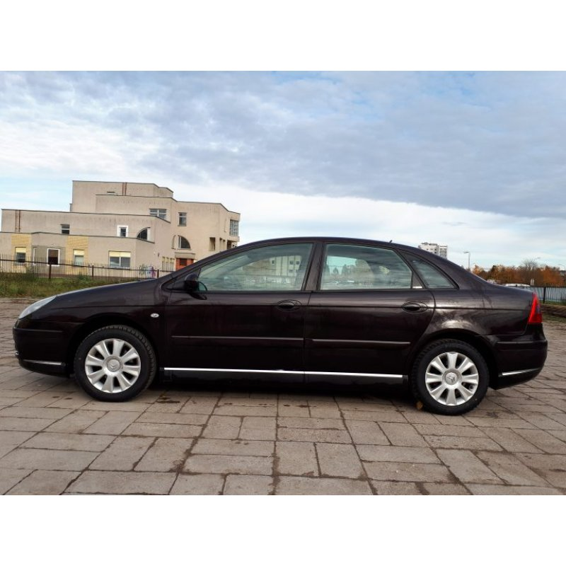

Welcome to benzinas
Benzinas | Circle K
2020.10.29 11:20Skip to main content Rask artimiausią degalinę
Top menu
DIRBK PAS MUS APIE MUS KLIENTŲ APTARNAVIMAS 1877 Prisijungti EXTRA Club Verslo savitarnos portalas Circle K IDMain navigation
EXTRA CLUB EXTRA Club Naudos ir pasiūlymai Kortelės Taisyklės D.U.K ImageEXTRA Club
Lojalumo programos nariai gauna papildomas naudas! Prisijunk dabar MŪSŲ PRODUKTAI Maistas ir gėrimai Kava „Frozen“ gaivusis gėrimas Nauji mėsainiai Akcijos You give - we give Siaubingai skani naujiena Košmarą keisk į švarą Circle K Programėlė Sudėčių katalogas ImageMūsų maistas į Tavo namus!
Greitas pristatymas tiesiai prie Tavo durų. Užsisakyk dabar AUTOMOBILIUI Degalai Benzinas Dyzelinas AdBlue Kiti produktai D.U.K Plovykla Plovyklos programos Plovyklos stebėjimas Tepalai Kelių mokesčių vinjetės ImageDegalų kainos
Čia rasi žemiausias degalų kainas mūsų tinkle. Daugiau TVARUMAS Mūsų tvarumo istorija Pokyčiai degaluose Aukščiausios kokybės produktai Švaresni automobiliai ir švaresnė gamta Socialinė atsakomybė Skaidrumas ir etika VERSLUI Image Image Benzinas Benzinas Dyzelinas AdBlue Kiti produktai D.U.KCircle K benzinas
Circle K benzino priedų sudėtyje yra aktyvių elementų, kurie maksimaliai apsaugo degalų sistemą nuo korozijos, pagerina variklio darbą ir mažina degalų sąnaudas. ImageBenzinas miles®
Circle K miles® degalai rodo mūsų įsipareigojimą teikti Jums tik efektyvius ir aukščiausios kokybės produktus. Su miles® toliau tobuliname degalus, kurie suteikia didesnį efektyvumą ir pagerina variklio darbą.
ImageBenzinas milesPLUS®
Jei norite automobiliui suteikti ypatingą priežiūrą, milesPLUS® – puikus pasirinkimas. Šie efektyvūs aukščiausios kokybės degalai rūpinasi Jūsų automobilio varikliu ir padeda jam dirbti tolygiau, švariau bei padidina jo ilgaamžiškumą.
Benzinas miles ® milesPLUS ® Mažesnės degalų sąnaudos
Mažesnė aplinkos tarša
Ilgesnė variklio tarnavimo trukmė
Valo ir apsaugo variklį
Išlaiko variklio galią
Optimizuoja variklio darbą
Image Image
miles® 95
miles® 95 sudėtyje yra daugiafunkcinių benzino priedų, kurie variklyje neleidžia kauptis lipnioms nuosėdoms ir padeda efektyviau sudeginti degalus. Reguliarus šių priedų naudojimas sumažina degalų sąnaudas ir sumažina žalingų medžiagų išskyrimą.
ImagemilesPLUS® 95
milesPLUS® benzine yra trinties modifikatorių, kurie padeda varikliui dirbti efektyviau, bei valančių priedų, padedančių išvalyti ir išlaikyti švarias variklio ir degalų sistemas. Kartu su antikoroziniais priedais milesPLUS® benzinas apsaugo variklį.
ImagemilesPLUS® 98
milesPLUS® benzinas apsaugo variklį nuo korozijos ir užtikrina mažesnį variklio dėvėjimąsi. Švaresnis, efektyvesnis variklis daugiau energijos skiria pagrindiniam darbui, taip pagerindamas degalų sąnaudas ir mažindamas aplinkos taršą.
Daugiau apie benziną
File Esminiai faktai apie miles® ir milesPLUS benziną_0.pdfDažniausiai užduodami klausimai
Turite klausimų apie Circle K degalus? Kviečiame perskaityti dažniausiai užduodamus klausimus. SkaitytiFooter
PRIVATIEMS
EXTRA Club Degalinių sąrašas Klientų aptarnavimas Degalų kainos Prarastų pinigų grąžinimasVERSLUI
Tapkite verslo klientu EXTRA Verslo klubas Gaminio duomenų lapai Sutartys ir dokumentai įmonėms Degalinės užsienyje Fiksuota kainodaraDIRBK PAS MUS
Darbas degalinėse Darbas ofiseAPIE MUS
Kontaktai Naujienos Naujos Circle K degalinės Socialinė atsakomybė VadovaiBottom
Privatumo politika SlapukaiCopyright © 2020 Circle K Lithuania
Find us on Google Play Find us on App Store